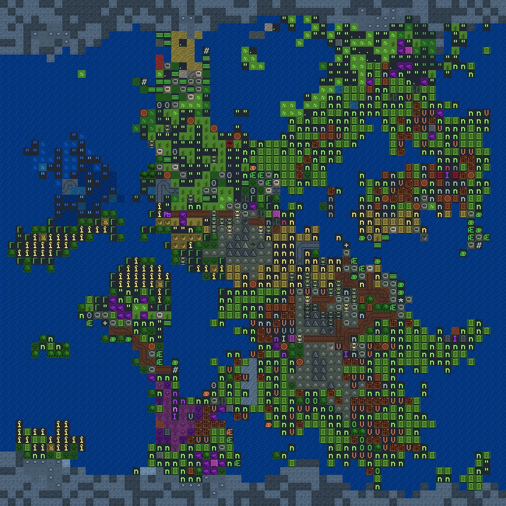
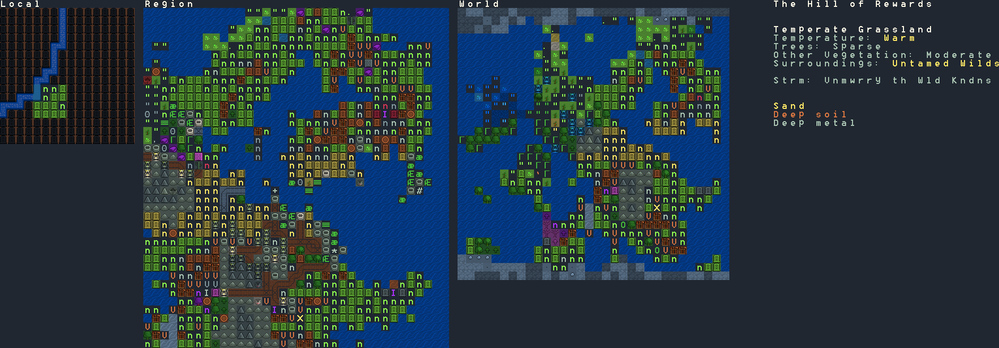
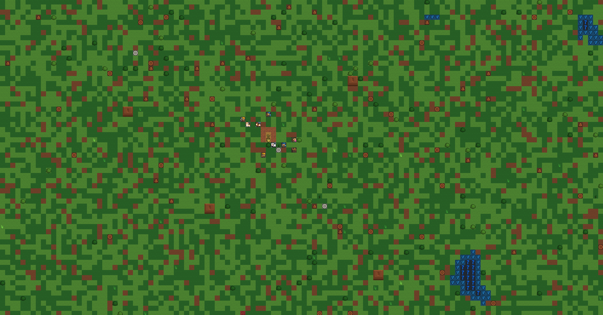
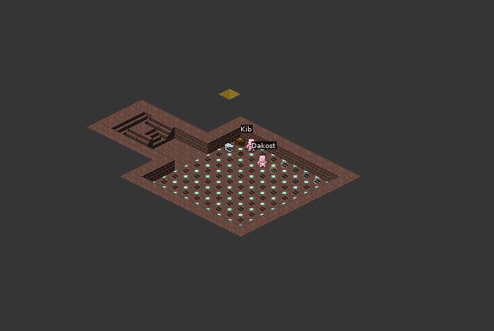
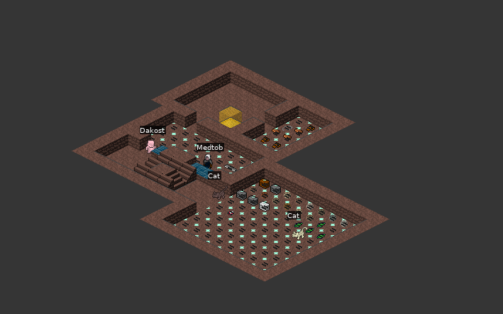

Strasp Xagu
Stories of Forts & Adventures
Table of Contents
1 Introduction
Through these series, we will explore a series of stories in the world of Strasp Xagu. The entries are always written from the perspective of different nobles, usually the highest ones, and the decisions they take.

2 Escaping From Reality (Fathzuden)
Joined by chance and luck, a group of dwarves set off into remote, unexplored lands, in quest for a new place to call home.

2.1 Diary of Expedition Leader Fath 'Fath Rakedslings' Borushbim
Fath Borushbim is the expedition leader of The Wayward Labors. They have arrived at Fathzuden on the 15th of Granite in the Year 250.
Expedition Leader Fath Borushbim was sixty years old at the time, one of the youngest dwarves in the Wayward Labors.
Those who knew him at the time described him as a sharp, intelligent dwaves with a lot of appreciation for industry and fairness. In this vein, he decided that there was no fairer way to earn his living than to gather a group of other dwarves and lead them off into the wild, to chance their luck.
These journals were written by him.
2.1.1 250-01-15 Arrival
We had been traveling for many days until we spotted what looked like the area we wanted to settle in.
After exploring around and recognizing a few landmarks, I knew we had made it.

Parking our wagon someways southeast of the river, I started to issue instructions.
The first thing to do was to task our miner, Kib Munestkeskal, to dig down. There is a hill to the south, but modifying it into safe living conditions would've proven too much of a time hassle.
We want a wide hole through which we can pass to the underground living quarters we will have.
We have enough water surrounding us that building a moat should not be impossible.
The first layer underground will be a security layer, which will eventually host what ever we need for the defense of our quarters. For now, it's just going to be a landing.
The second layer will be where our industries will be located at. It will currently have a temporary storage, and an intersection of caverns.
The third layer will be where we will live in. It will have a single road where the quarters for each of us seven will be. Every living quarters will have a dining room and a bedroom. Hopefully we can do more, in the future.
Meanwhile, I have some trees I want to cut. One of the dwarves, Reg Mengustuth, is a carpenter. He can help us make some of the crafts that we might need from it.
2.1.2 250-01-16 New Building Plan
The Miner Kib has told me that his pick has reached damp sand under the silty clap he was digging into. This has forced us to consider a new plan. For now, I've told him to continue with the first layer (security layer) and second layer (industry layer) as he was doing.
In other news, we've been collecting a lot of wood which we're moving back to the stockpile.

The news of the damp sand really are a damper, but I am looking forward to see the two levels done, before we make new plans for living quarters.
2.1.3 250-01-23 Week's Progress
We have been moving a lot of the wood that I've managed to get from the nearby trees to the entrance of our cave. I feel quite happy about the progress we've been doing getting wood ready for our projects.
I have also been gathering some herbs and plants.
The Miner Kib has finished working on the two layers that we had originally planned, together with reinforcing and digging into a squared space that will serve as temporary storage.
He was very happy with what he had done. We've begun moving most foodstuff to that area, as well as the herbs I've been gathering.

2.1.4 250-02-01 Living Quarters and Woodworks Area
After talking again with Kib, we've decided to work the first layer into the living quarters and a woodworks area in the industry quarter.
So far the woodworks area is nearly done. We're going to have an entry room with a stockpile of wood, which is then processed by a carpenter who has a small room for finished goods.

The group is getting along really well; I feel many of them are becoming my friends.
2.1.5 Outdoors Roof, Mining Progress
I tasked Reg Mengustuth, Dakost Esisid and Ast Amostkokeb to build a sun-roof for the entrance of the mine which might, in due time, serve as the base to a small tower to host our military.
Dakost and Ast have become lovers; I had not noticed until I saw them working on the sunroof. They were giggling and telling each other jokes.